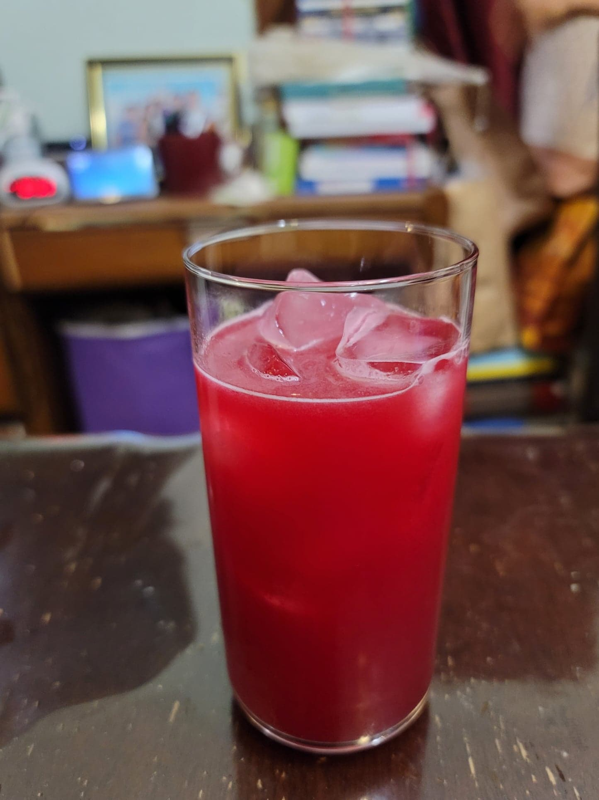

Agua Fresca de Tuna

Ingredients:
10 Prickly pears, peeled
8 cups Water
Agave or Sugar, to taste
2-3 Limes, juiced
Instructions:
Combine all ingredients into a blender. Purée for about 1 minute. Then strain into a pitcher. Serve cold over ice.